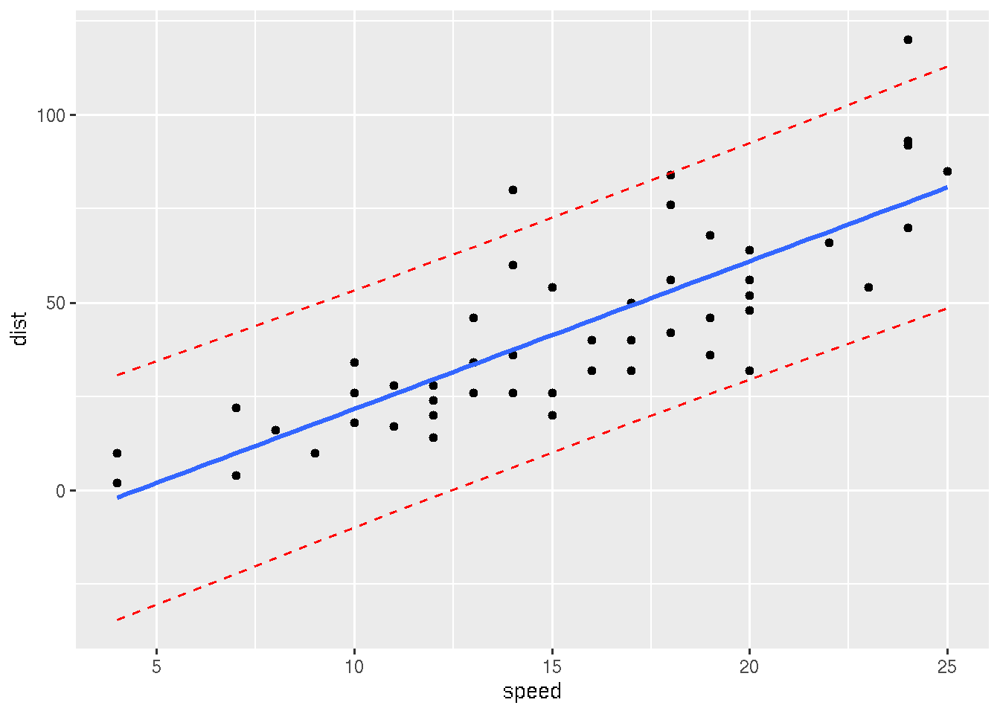

Chapter 22 Spline model
In this example we will generate data from a given function and then build a model using splines and estimate quality of the model.
22.1 Generate dataset from a given function
# parameters to generate a dataset
n.all <- 100 # number of observations
train.percent <- 0.85 # portion of the data for training
res.sd <- 1 # standard deviation of noise
x.min <- 5 # min limit of the data
x.max <- 105 # max limit of the data
# generate x
set.seed(1) # to get reproducible results by randomizer
x <- runif(x.min, x.max, n = n.all)
# noise from normal destibution
set.seed(1)
res <- rnorm(mean = 0, sd = res.sd, n = n.all)
# generate y using a given function
y.func <- function(x) {4 - 2e-02*x + 5.5e-03*x^2 - 4.9e-05*x^3}
# add noise
y <- y.func(x) + res22.2 Split data for train and test
22.3 Diagram of the given function and generated datasets
# lines of generated data for plot
x.line <- seq(x.min, x.max, length = n.all)
y.line <- y.func(x.line)
# PLOT
# generate plot by train data
par(mar = c(4, 4, 1, 1)) # reduce margins (optional)
plot(x.train, y.train,
main = 'Generated data and original function',
col = grey(0.2), bg = grey(0.2), pch = 21,
xlab = 'X', ylab = 'Y',
xlim = c(x.min, x.max),
ylim = c(min(y), max(y)),
cex = 1.2, cex.lab = 1.2, cex.axis = 1.2)
# add points of test data
points(x.test, y.test, col = 'red', bg = 'red', pch = 21)
# add the given function
lines(x.line, y.line, lwd = 2, lty = 2)
# add legend
legend('topleft', legend = c('train', 'test', 'f(X)'),
pch = c(16, 16, NA),
col = c(grey(0.2), 'red', 'black'),
lty = c(0, 0, 2), lwd = c(1, 1, 2), cex = 1.2)
22.4 Build a model using splines
We will compair sevaral models with degree of freedoms (df) from 2 to 40, where 2 correspond to a linear model.
max.df <- 40 # max degree of freedom (df)
#
tbl <- data.frame(df = 2:max.df) # data frame for writing errors
tbl$MSE.train <- 0 # column 1: errors of train data
tbl$MSE.test <- 0 # сcolumn 2: errors of test data
# generate models using for cycle
for (i in 2:max.df) {
mod <- smooth.spline(x = x.train, y = y.train, df = i)
# predicted values for train and test data using built model
y.model.train <- predict(mod, data.frame(x = x.train))$y[, 1]
y.model.test <- predict(mod, data.frame(x = x.test))$y[, 1]
# MSE errors for train and test data
MSE <- c(sum((y.train - y.model.train)^2) / length(x.train),
sum((y.test - y.model.test)^2) / length(x.test))
# write errors to the previously created data frame
tbl[tbl$df == i, c('MSE.train', 'MSE.test')] <- MSE
}
# view first rows of the table
head(tbl, 4)## df MSE.train MSE.test
## 1 2 3.6484333 3.3336892
## 2 3 1.5185881 1.1532857
## 3 4 0.8999800 0.8874002
## 4 5 0.7477105 0.948329022.5 Diagram of MSE for train and test data
# plot MSE from our table
plot(x = tbl$df, y = tbl$MSE.test,
main = "Changes of MSE from degrees of freedom",
type = 'l', col = 'red', lwd = 2,
xlab = 'spline degree of freedom', ylab = 'MSE',
ylim = c(min(tbl$MSE.train, tbl$MSE.test),
max(tbl$MSE.train, tbl$MSE.test)),
cex = 1.2, cex.lab = 1.2, cex.axis = 1.2)
# add
points(x = tbl$df, y = tbl$MSE.test,
pch = 21, col = 'red', bg = 'red')
lines(x = tbl$df, y = tbl$MSE.train, col = grey(0.3), lwd = 2)
# minimal MSE
abline(h = res.sd, lty = 2, col = grey(0.4), lwd = 2)
# add legend
legend('topright', legend = c('train', 'test'),
pch = c(NA, 16),
col = c(grey(0.2), 'red'),
lty = c(1, 1), lwd = c(2, 2), cex = 1.2)
# df of minimal MSE for test data
min.MSE.test <- min(tbl$MSE.test)
df.min.MSE.test <- tbl[tbl$MSE.test == min.MSE.test, 'df']
# optimal df for precise model and maximal simplicity
df.my.MSE.test <- 6
my.MSE.test <- tbl[tbl$df == df.my.MSE.test, 'MSE.test']
# show the optimal solution
abline(v = df.my.MSE.test,
lty = 2, lwd = 2)
points(x = df.my.MSE.test, y = my.MSE.test,
pch = 15, col = 'blue')
mtext(df.my.MSE.test,
side = 1, line = -1, at = df.my.MSE.test, col = 'blue', cex = 1.2)
22.6 Build optimal model and plot for the model
mod.MSE.test <- smooth.spline(x = x.train, y = y.train, df = df.my.MSE.test)
# predict data for 250 x's to get smoothed curve
x.model.plot <- seq(x.min, x.max, length = 250)
y.model.plot <- predict(mod.MSE.test, data.frame(x = x.model.plot))$y[, 1]
# plot train data
par(mar = c(4, 4, 1, 1))
plot(x.train, y.train,
main = "Initial data and the best fit model",
col = grey(0.2), bg = grey(0.2), pch = 21,
xlab = 'X', ylab = 'Y',
xlim = c(x.min, x.max),
ylim = c(min(y), max(y)),
cex = 1.2, cex.lab = 1.2, cex.axis = 1.2)
# add test data
points(x.test, y.test, col = 'red', bg = 'red', pch = 21)
# function
lines(x.line, y.line,lwd = 2, lty = 2)
# add model
lines(x.model.plot, y.model.plot, lwd = 2, col = 'blue')
# legend
legend('topleft', legend = c('train', 'test', 'f(X)', 'model'),
pch = c(16, 16, NA, NA),
col = c(grey(0.2), 'red', 'black', 'blue'),
lty = c(0, 0, 2, 1), lwd = c(1, 1, 2, 2), cex = 1.2)